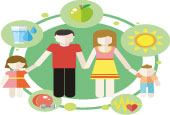
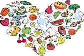
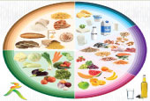
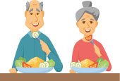
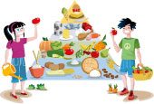
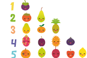
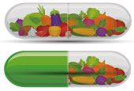
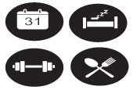

Beslenme

Yeterli ve Dengeli Beslenme
Nedir

Temel Besin Grupları

Yaşlılıkta Beslenme
Yaş Dönemlerinde Beslenme

Ergenlik Döneminde Beslenme
Menapoz Döneminde Beslenme
Okul Çağı Çocuklarında Beslenme

Okul Öncesi SAğlıklı Beslenme
Bebek Beslenmesi
Emzirme Döneminde Beslenme
Gebelik Döneminde Beslenme
Özel Durumlarda Beslenme

Hastalıklarda Beslenme
Besin Güvenliği ve Hijyen

Programlar ve Aktiviteler